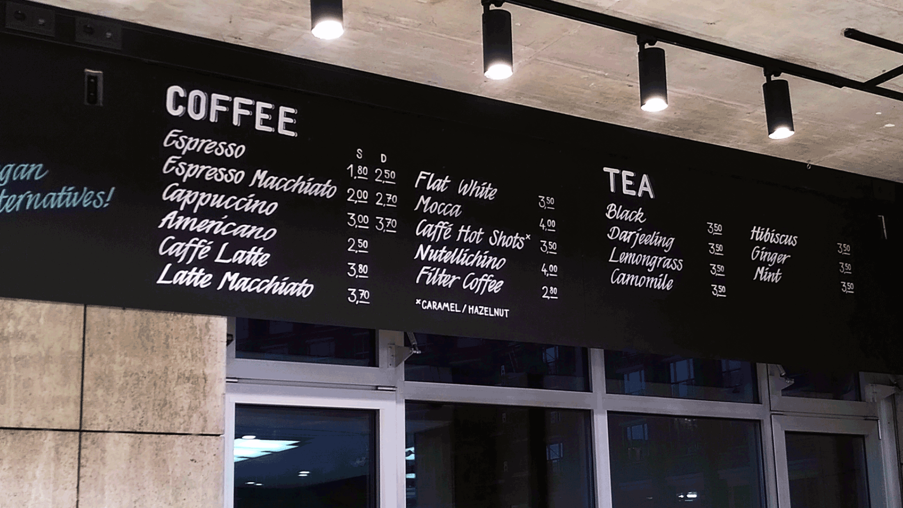

Signmaking
Sweet donuts, delicious cakes, perfect coffee with latte-art on it and everything else you could wish for in a café. You just feel when a restaurant or cafe has that kind of soul to it, when everything is made with love and passion, when people put their hearts in and create beautiful surroundings – to heartily welcome their customers to embrace the sweet things in life. And what underlines handmade, personal, delicious food made with love even more? Exactly, handmade signs made with the same personality and passion. For the grand opening of the cafe, I had the pleasure to design a concept and to hand-paint the signs for the store.
At the beginning of a (signpainting) project, there are always a bunch of open questions. What is the purpose of the sign? Is it a main information source or is it more decorational? Which information exactly should it transport, what are possible ways to produce and what fits best to the customer? What do the commodities allow?
In this case, possibilities were pretty much open in any direction. The main goal was to create well-functioning signs that give customers a good orientation and fit to the brand and the style of the location. The overall look and feel should be high-quality, trustworthy, and transport love to the details. Looking for a way to convey these attributes, the idea of hand-painting the signs was close. Handpainted signs have personality. Each sign is unique, each letter individually written for an exact purpose and and exact place. It enrichens the overall look and feel of a location, and beyond plain information, it transports the craftsmnship and love for detail with it.
With these questions in mind, the first job to be done before picking up a brush and paint was to sort out information and create a visual concept.
For the cafe, the menu was rather broad. There were loads of beverages and different kinds of food. In addition, the owner wanted to stay flexible to test out different dishes and see what works out best, especially regarding the donuts and bagels. To solve this problem and narrow it down for the signs, splitting the menu into two categories made sense: one fixed part for the beverages that do not often change, and another part that could be easily adjusted for the food. This way, the beverages would make out the major part of the handpainted signs.
After clustering the menu and deciding which information should go on the signs, the planning of size and position starts. The location of the café had high ceilings and a broad free space, which allowed for a wide sign of ~5 meters.
In this case, the chalkboards are all custom tailored. The base is made of wooden board, then chalkboard paint is applied. You can usually get all that is needed for preparing chalk boards from your local hardware store or order the materials online.
Time to prepare for the letters! When transferring the sketches and positions to the board correctly, it is helpful to calculate the amount of rows and columns. Additionally, I like to make myself a kind of ruler with the correct measurements, this saves some time when drawing the baselines.
Now all the baselines are ready to go and the board is marked. Previously I tested how the size of letters would work out optically. Also, I painted an example row with the final brushes on draft paper to determine the final look and style of letters.
Everything set and prepared, lets go! Row by row, I now paint the menu items on the board. At hand is the list to get everything in right order and a wet towel to erase baselines or errors.
Adding some final details – and it’s finished!
This signpainting job was particularly fun and challenging. I’m very happy with the end result and I’m looking forward to more similar work.
Thanks for reading! 😊